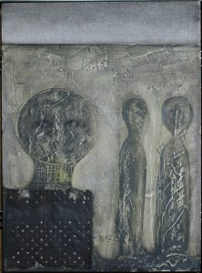

Nagrade:
- 2024. godine - Pohvala na 28. Sremskomitrovačkom salonu u galeriji Lazar Vozarević u Sremskoj Mitrovici
- 2024. godine - II Nagrada na izložbi Festival Nušićijada u Domu kulture u Ivanjici
- 2023. godine - Nagrada za crtež na XII-tom Međunarodnom bijenalnom festivalu umetnosti minijature BiH u Tuzli
- 2022. godine - I nagrada na 22. Rumskom likovnom salonu, Kulturni centar „Brana Crnčević„ Ruma
- 2022. godine - Pohvala na XIX salonu minijature Zrno Zrenjanin
- 2022. godine - II nagrada SLOBODA STVARANJA Dragutin Ančić na XXIII zrenjaninskim susretima slikara u Narodnom Muzeju Zrenjanin
- 2022. godine - III Nagrada na 5. Bijenalu crteža i grafike u memorijalnoj galeriji “Dušan Starčević“ u Smederevskoj Palanci
- 2021. godine - III Nagrada na Pokrajinskoj smotri likovnog stvaralaštva amatera u Novom Bečeju
- 2019. godine - Pohvala na izložbi Udruženja likovnih umetnika Sirmium Sremska Mitrovica
- 2019. godine - dobitnik II NAGRADE na LXIV MAJSKIM SUSRETIMA u galeriji “Akademija 28” u Beogradu
- 2018. godine - Medalja na VI Izložbi slika malog formata u Subotici
- 2018. godine - Pohvala na XVIII –tim Zrenjaninskim susretima slikara
- 2018. godine - Pohvala 3. Međunarodnog bijenala malog formata MKU “PETEFI“ Zrenjanin
- 2018. godine - Specijalna nagrada na II “ HAL „ Mail art projektu 2018., Balaton Hungary
- 2017. godine - I nagrada Međunarodnog bijenala minijature “VoVa” MiniArt 2017. Mađarska
- 2017. godine - II nagrada na izložbi 30x30 u organizaciji Kulturnog centra Zrenjanin
- 2017. godine - Pohvala na Mail art projektu Grape and wine, Balaton, Hungary
- 2017. godine - Pohvala na XV salonu minijature Zrno Zrenjanin
- 2016. godine - Award of Excellence na VI Internacionalnom SpanishFlu Mail Art Bijenalu, Miškolc, Hungary
- 2016. godine - Pohvala na V Balaton salonu Madjarska
- 2015. godine - I nagrada na 17. Rumskom likovnom salonu, Kulturni centar Ruma
- 2015. godine - Pohvala žirija na III Bijenalu likovnih i primenjenih umetnosti, Centar za kulturu Kovin
- 2015. godine - Pohvala žirija na izložbi Matićevi dani, Ćuprija u Muzeju Horeum Margi-Ravno
- 2015. godine - Grand Prix IV Međunarodnog bijenala minijature “VoVa” MiniArt 2015. Mađarska
- 2014. godine - II nagrada na 16. Rumskom likovnom salonu, Kulturni centar Ruma
- 2014. godine - Nagrada ZLATNA PALETA na XIV zrenjaninskim susretima slikara
- 2014. godine - Nagrada za slikarstvo na 2. Medjunarodnom konkursu malog formata Novi Sad
- 2014. godine - Pohvala na IV Balaton salonu Madjarska
- 2014. godine - III nagrada na LIX Majskim susretima u galeriji AKADEMIJA 28 u Beogradu
- 2013. godine - Pohvala za rad izložen na I Homorod salonu 2013. u Rumuniji
- 2013. godine - Grand Prix III Međunarodnog bijenala minijature “VoVa” MiniArt 2013. Mađarska
- 2011. godine - II nagrada SLOBODA STVARANJA Dragutin Ančić na XI zrenjaninskim susretima slikara u Narodnom Muzeju Zrenjanin
- 2008. godine - Pohvala za rad izložen na SREMSKOM SALONU u galeriji Lazar Vozarević u Sremskoj Mitrovici
- 2007. godine - Specijalna nagrada na smotri likovnog stvaralaštva amatera Opštine Sremska Mitrovica
- 2006. godine - I nagrada likovnog salona SREM u galeriji Lazar Vozarević u Sremskoj Mitrovici

{kind=link}
{kind=link}
{kind=link}
{kind=link}
{kind=link}
{kind=link}
{kind=link}
{kind=link}